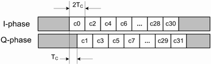

With 2450 MHz O-QPSK PHY, each data byte is converted to two symbols. Each of these symbols is then mapped to 32 chips. These chips modulate the in-phase and quadrature phase of the carrier at an offset of chip period Tc.
